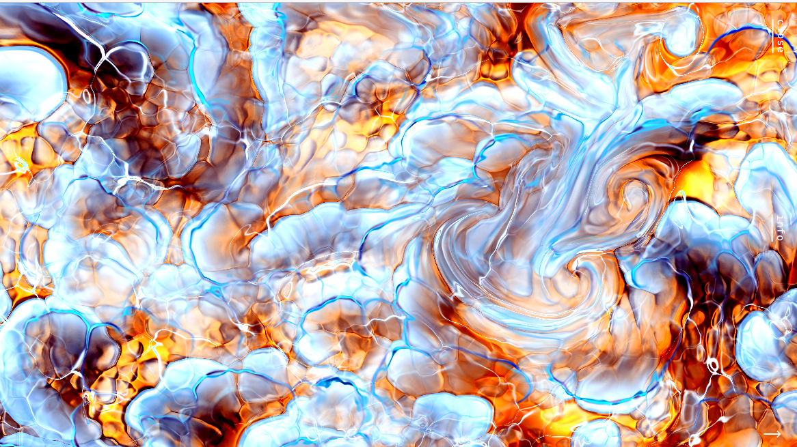
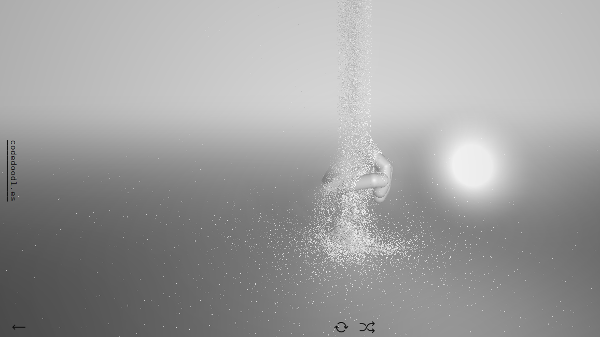

This website allows the user to determine how the water moves around the screen. By moving your mouse, the water changes direction or mixes with the fire. It is constantly moving, even when the mouse is off the webpage.
By moving your mouse, you move the hand on the screen. You can click and drag for different perspectives. Clicking turns the hand into a fist. Sand is coming down from the top of the screen and you can move the hand to interrupt this.
